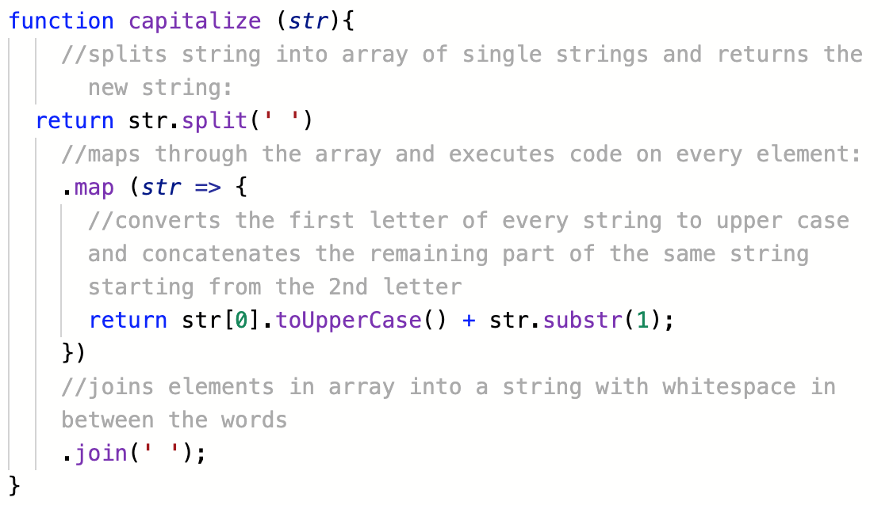

Blocked on a simple problem
During the Sprint 4 kata exercises I ran into quite a few problems which put my patience, calmness and perseverance to the test. I already started to struggle a bit in the "FizzBuzz" and "JS-Gradebook" challenges, but it got worse when none of my code was working in the "Built-in Methods" challenge. I tried for hours and hours and finally my body reacted with a panic attack and it felt like ice cold water was running through my veins. My inner voice yelled at me that I should have never enrolled in this bootcamp because I am simply not smart enough and I am never going to learn programming ( ! fixed mindset alert ! ). This awful feeling left me totally blocked and I had to step away from my computer to calm down and relax. The same night I had a very bad sleep.
In the next morning, I opened up the kata challenge again, and went through the sample solutions step by step, trying to understand each step, but also trying to figure out what exactly it is that is causing me trouble. Turned out, that I didn’t really understand how functions work. I couldn’t really find a pattern or structure or even some kind of format for functions. They looked messy to me and particularly nested functions just totally seemed to freak me out ( e.g. How can there be two ‘returns’ in one function??? or How is it possible to have so many ‘steps’ in one function without even storing some of the new values in a new variable??? ).
Here is an example:
In this exercise, the task was to ‘simply’ capitalize the first letter of all the words of a given string using JavaScript built-in methods. I knew what I had to do and put it down into pseudocode explaining the steps in simple English but I just couldn’t figure out how to turn it into a function. After hours of trial and error, browsing through Google and console.logging each step, I gave up and had a look at the solution. My pseudocode was correct but I simply didn't manage to convert it into a ( nested ) function. 
So, I dedicated a few hours just watching a few more youtube tutorials on functions and built-in methods.
What I have learned throughout this process is that I ran through the JS basics too quick. I should have invested more time in practicing and just having a go in “playing” around with functions. The EDA learning material also recommended to spend a bit of time researching built-in functions, but I just skipped that part and jumped right into the exercise. I found a great youtube tutorial from Traversy Media about built-in functions, which would have helped me to solve this task a lot better if I had watched it before.
I also should have reached out for help from my peers or facilitator. The feeling of frustration and panic can be a lot worse than overcoming one’s pride and ask someone for support.
Another big note to myself ( and anyone else who experienced similar ): Be patient with yourself! No one will become a JavaScript master in less than 2 weeks.